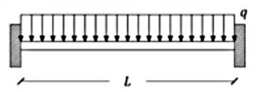
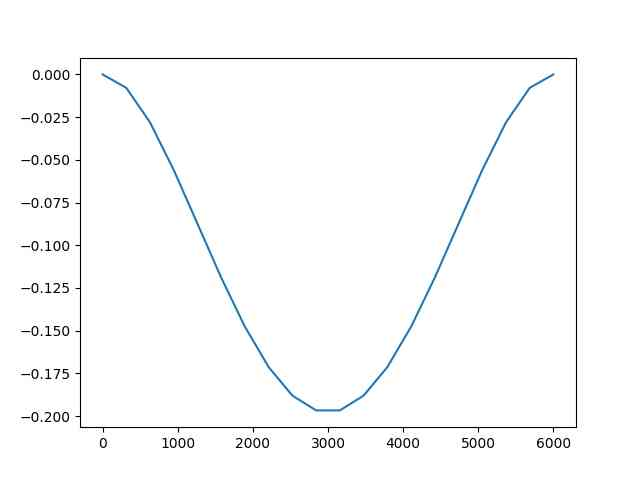
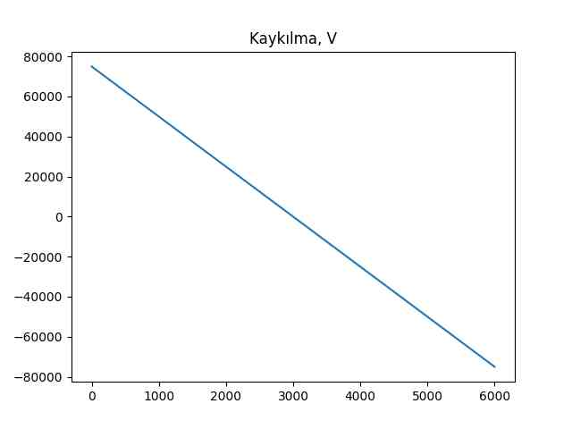
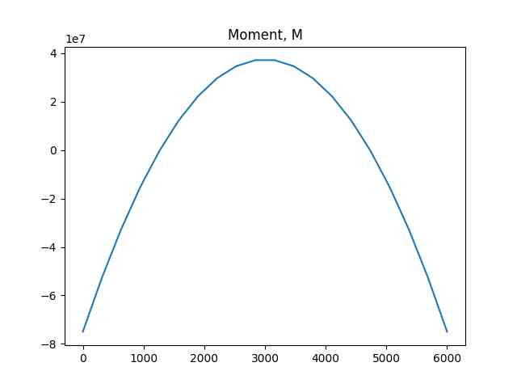

İlerlemeden önce birazdan lazım olacak iki formülü bulalım. Daha önce gördük ki
$$ I = \int \int X_2^2 \mathrm{d} X_2 \mathrm{d} X_3 $$
ve
$$ M = \int \int -X_2 \sigma_{11} \mathrm{d} X_2 \mathrm{d} X_3 $$
Üstteki iki formülü birleştirelim, $M$ içinde $I$ oluşturalım, ve yerine koyalım,
$$ M = \int \int -\frac{X_2}{X_2^2} X_2^2 \sigma_{11} \mathrm{d} X_2 \mathrm{d} X_3 = -\frac{1}{X_2} \sigma_{11} I $$
Buradan $\sigma_{11}$ eşitliğine geçilir,
$$ \implies \sigma_{11} = -\frac{M X_2}{I} $$
Yatay Kaykılma Stresi
Kaykılma stresi $\tau$'yu bulmak için yine çubuğun ufak bir kısmına odaklanalım,
Tüm etki eden kuvvetlerin toplamı sıfır olmak zorundadır [2],
$$ -P + (P + \mathrm{d} P) + \tau b \mathrm{d} x = 0 $$
$$ -\mathrm{d} P/\mathrm{d} x = \tau b \qquad (1) $$

$P$'yi bulmak için $A$ bölgesindeki stresleri entegre ediyoruz,
$$ \int_A \mathrm{d} P = \int_A \sigma_b \mathrm{d} A $$
Fakat daha önce bulduk ki $\sigma_b = -My / I$, yerine koyunca,
$$ P = \int_A - \frac{My}{I} \mathrm{d} A $$
$M$ ve $I$ sabittir, entegral dışına çıkartılabilir,
$$ P = - \frac{M}{I} \int_A y \mathrm{d} A = - \frac{MQ}{I} $$
Üstte bulunan $P$'yi (4)'e sokunca,
$$ - \frac{\mathrm{d}}{\mathrm{d} x} \left( - \frac{MQ}{I} \right) = \tau b $$
$$ \frac{Q}{I} \frac{\mathrm{d} M}{\mathrm{d} x} = \tau b $$
Şimdi hatırlarsak $\mathrm{d} M/\mathrm{d} x$ türevi yatay kaykılma yükü $V$'ye eşittir. O zaman
$$ \frac{Q}{I} V = \tau b $$
Nihai yatay kaykılma stres denklemi,
$$ \tau = \frac{V Q}{I b} $$
Euler-Bernoulli çubuklarını temel alan analizleri üç adıma bölmek mümkündür.
1) Uygulanan yük $q$'yu kullanarak saptırma (deflection) fonksiyonu $y$'yi hesapla,
$$ q = E I \frac{\mathrm{d}^4 y}{\mathrm{d} X_1^4} $$
Formülde görüyoruz eğer $q$ biliniyorsa ve elde yeterli sınır şartları var ise (dört tane) diferansiyel denklemi kullanarak $y$'yi bulabiliriz [1, Lecture 2, 2:02:00].
2) Saptırma $y$ bulunduktan sonra onu kullanarak kaykılma (shear) ve bükülme momentini hesapla,
$$ M = E I \frac{\mathrm{d}^2 y}{\mathrm{d} X_1^2}, \quad V = E I \frac{\mathrm{d}^3 y}{\mathrm{d} X_1^3} $$
çünkü sonuçta $M,V$ hesapları $y$'nin birer fonksiyonu, elde edilen $M,V$ sonuçları $X_1$'in fonksiyonları olacak tabii ki.
3) Oradan hareketle moment ve kaykılma $M,V$ bulunanca stres bileşenlerini bulabilirim,
$$ \sigma_{11} = -\frac{M X_2}{I}, \quad \sigma_{12} = -\frac{VQ}{I b} \qquad (2) $$
Soru
Alttaki 6 metreli Euler-Bernoulli çubuğunun uygulanan $q$ yükü sebebiyle sahip olacağı yer değişim fonksiyonunu bulun. Çubuğun Young genliği 20,000 MPa, ve ona eşit şekilde dağılmış bir 45 kN / m $q$ yükü uygulanıyor. Çubuk kalınlığı 600 mm, yüksekliği 800 mm.

Çözüm
Bir dikdörtgenin atalet momenti $b h^3 / 12$. EI tabii ki Young'in genliği çarpı bu sayı olur. Aradığımız $y$ denklemi, dördüncü dereceden bir diferansiyel denklem çözeceğiz. Dördüncü derece demek nihai çözüm için dört tane sınır şartı gerekli demek. Bu şartları vermeden çözersek,
import sympy as sym
L = 6000 # mm bazinda
Em = 20000
b = 500
h = 800
Ig = (b * h**3)/12
EI = Em * Ig
q = -25 # Newton icin 1000 carpip mm icin 1000 ile bolduk ayni kaldi
X1, X2 = sym.symbols('X1, X2')
y = sym.Function('y')
sol = sym.dsolve(EI*y(X1).diff(X1,4)-q, y(X1))
print (sym.latex(sol))
y{\left(X_{1} \right)} = C_{1} + C_{2} X_{1} + C_{3} X_{1}^{2} + C_{4} X_{1}^{3} - \frac{25 X_{1}^{4}}{10240000000000008}
dsolve çağrısı sıfıra eşitlik faraziyesi ile hareket ediyor, bu sebeple
üstteki çağrıda diferansiyel denklemin neye eşit olduğunu berlirtmedik.
$$ y{\left(X_{1} \right)} = C_{1} + C_{2} X_{1} + C_{3} X_{1}^{2} + C_{4} X_{1}^{3} - \frac{25 X_{1}^{4}}{10240000000000008} $$
Çok ufak noktalı sayı [1, Lecture 2]'de 1 bolu büyük bir sayı olarak gösterilmiş,
print (1/(25./10240000000000008.))
409600000000000.3
$$ y{\left(X_{1} \right)} = C_{1} + C_{2} X_{1} + \frac{C_{3} X_{1}^{2}}{2} + \frac{C_{4} X_{1}^{3}}{6} - \frac{ X_{1}^{4}}{409600000000000} $$
Gördüldüğü gibi çözümde 4 tane sabit var, bu sabitler orada çünkü sınır şartlarını tanımlamadık. Onlar tanımlanınca sabitler yokolur.
y1 = y(X1).subs(X1,0)
y2 = y(X1).subs(X1,L)
th = y(X1).diff(X1)
th1 = th.subs(X1,0)
th2 = th.subs(X1,L)
sol = sym.dsolve(EI*y(X1).diff(X1,4)-q, y(X1),ics={y1:0,y2:0,th1:0,th2:0})
print (sym.latex(sol))
y{\left(X_{1} \right)} = - \frac{25 X_{1}^{4}}{10240000000000008} + \frac{12500 X_{1}^{3}}{426666666666667} - \frac{37500000 X_{1}^{2}}{426666666666667}
$$ y{\left(X_{1} \right)} = - \frac{25 X_{1}^{4}}{10240000000000008} + \frac{12500 X_{1}^{3}}{426666666666667} - \frac{37500000 X_{1}^{2}}{426666666666667} $$
y = sol.rhs
V = EI * y.diff(X1,3)
M = EI * y.diff(X1,2)
print (V)
print (M)
74999.9999999999 - 25.0*X1
-12.5*X1**2 + 74999.9999999999*X1 - 74999999.9999999
Stres ogesini hesaplayabilirim simdi, formulleri (2)'de,
S11 = -M * X2 / Ig
print (sym.simplify(S11))
X2*(5.85937499999999e-10*X1**2 - 3.515625e-6*X1 + 0.003515625)
Q = b*((h/2) - X2) * ((h/2)+(X2/2))
S12 = (-V * Q) / (Ig*b)
print (S12)
9.375e-14*(200000.0 - 500*X2)*(25.0*X1 - 74999.9999999999)*(X2/2 + 400.0)
Yer değişim sonucunu grafikleyelim,
u = sym.lambdify(X1, y,'numpy')
x = np.linspace(0,L,20)
plt.plot(x,u(x))
plt.title(u'Yer Değişim y')
plt.savefig('phy_020_strs_03_03.jpg',quality=30)

Akla yatkin gozukuyor, ortalara dogru cubugun bukulmesi daha fazla her iki yana dogru daha az.
Kaykilma ve momenti de grafikleyelim,
v = sym.lambdify(X1, V,'numpy')
x = np.linspace(0,L,20)
plt.plot(x,v(x))
plt.title(u'Kaykılma, V')
plt.savefig('phy_020_strs_03_04.jpg',quality=30)

m = sym.lambdify(X1, M,'numpy')
x = np.linspace(0,L,20)
plt.plot(x,m(x))
plt.title('Moment, M')
plt.savefig('phy_020_strs_03_05.jpg',quality=30)

[devam edecek]
Kaynaklar
[1] Petitt, Intro to the Finite Element Method, University of Alberta, https://www.youtube.com/watch?v=2iUnfPRk6Ro&list=PLLSzlda_AXa3yQEJAb5JcmsVDy9i9K_fi
[2] Gramoll, Mechanics, http://www.ecourses.ou.edu/cgi-bin/ebook.cgi?topic=me